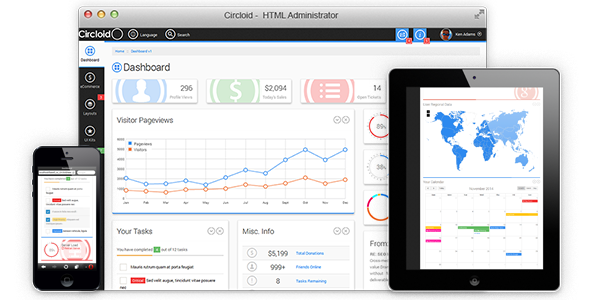
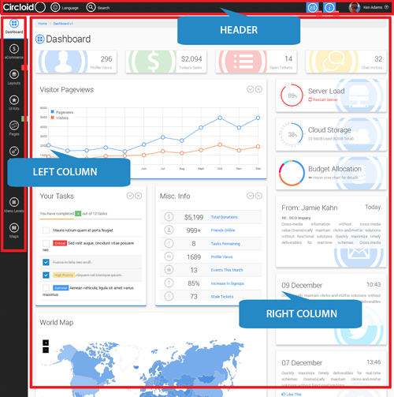

Thanks for purchasing Circloid (HTML Version)! This document contains everything you need to know about Circloid. Keep reading...

Demo: http://livedemo.base5builder.com/circloid_html/type_1/
Introduction To Circloid (HTML Version)
Circloid's structure is extremely simple to understand for both beginners and advanced developers alike. Each template page has 3 main sections: The Header, The Left Column and The Right Column.

Getting A Head Start
If you want to just jump in and start using Circloid, then you can just open Files/pages-blank.html and get to work. But, if you want to know what Circloid can really do or you want to start from scratch, then keep reading. Both ways lead to an awesome final design.
Starting From Scratch
Basic HTML Structure
The documentation will first explain the layout of the basic template structure, then it will delve into each area like, widgets, plugins, and other features & dependencies.
Circloid's head tag should follow the structure given below. This is the core requirement for Circloid to work.
<head> <meta charset="utf-8"> <meta http-equiv="X-UA-Compatible" content="IE=edge"> <meta name="viewport" content="width=device-width, initial-scale=1"> <meta name="description" content=""> <meta name="author" content=""> <link rel="icon" href="assets/images/required/ico/favicon.ico"> <!-- Fav and touch icons --> <link rel="apple-touch-icon-precomposed" sizes="144x144" href="assets/images/required/ico/apple-touch-icon-144-precomposed.png"> <link rel="apple-touch-icon-precomposed" sizes="114x114" href="assets/images/required/ico/apple-touch-icon-114-precomposed.png"> <link rel="apple-touch-icon-precomposed" sizes="72x72" href="assets/images/required/ico/apple-touch-icon-72-precomposed.png"> <link rel="apple-touch-icon-precomposed" href="assets/images/required/ico/apple-touch-icon-57-precomposed.png"> <link rel="shortcut icon" href="assets/images/required/ico/favicon.png"> <title>Circloid - Responsive HTML Admin Template</title> <!-- Required CSS Files --> <link type="text/css" href="assets/css/required/bootstrap/bootstrap.min.css" rel="stylesheet"> <link href='http://fonts.googleapis.com/css?family=Roboto:400,300&subset=latin,latin-ext' rel='stylesheet' type='text/css'> <link type="text/css" href="assets/js/required/jquery-ui-1.11.0.custom/jquery-ui.min.css" rel="stylesheet" /> <link type="text/css" href="assets/js/required/jquery-ui-1.11.0.custom/jquery-ui.structure.min.css" rel="stylesheet" /> <link type="text/css" href="assets/js/required/jquery-ui-1.11.0.custom/jquery-ui.theme.min.css" rel="stylesheet" /> <link type="text/css" href="assets/css/required/mCustomScrollbar/jquery.mCustomScrollbar.min.css" rel="stylesheet" /> <link type="text/css" href="assets/css/required/icheck/all.css" rel="stylesheet" /> <link type="text/css" href="assets/fonts/metrize-icons/styles-metrize-icons.css" rel="stylesheet"> <!-- Optional CSS Files --> <!-- add CSS files here --> <!-- More Required CSS Files --> <link type="text/css" href="assets/css/styles-core.css" rel="stylesheet" /> <link type="text/css" href="assets/css/styles-core-responsive.css" rel="stylesheet" /> <!-- IE10 viewport hack for Surface/desktop Windows 8 bug --> <script src="assets/js/required/misc/ie10-viewport-bug-workaround.js"></script> <!--[if IE 7]> <link type="text/css" href="assets/css/required/misc/style-ie7.css" rel="stylesheet"> <script type="text/javascript" src="assets/fonts/lte-ie7.js"></script> <![endif]--> <!--[if IE 8]> <link type="text/css" href="assets/css/required/misc/style-ie8.css" rel="stylesheet"> <![endif]--> <!--[if lte IE 8]> <script type="text/javascript" src="assets/css/required/misc/excanvas.min.js"></script> <![endif]--> <!-- HTML5 shim and Respond.js IE8 support of HTML5 elements and media queries --> <!--[if lt IE 9]> <script src="https://oss.maxcdn.com/html5shiv/3.7.2/html5shiv.min.js"></script> <script src="https://oss.maxcdn.com/respond/1.4.2/respond.min.js"></script> <![endif]--> </head>
The main core of the body should follow the general structure below:
<div class="container-fluid"> <!-- START Header Container --> <div id="header-container"> <div class="header-bar navbar navbar-inverse" role="navigation"> <!-- NOTE TO READER: Accepts the following class(es) "navbar-fixed-top" class --> <div class="container"> <div class="navbar-header">...</div> </div> </div> </div> <!-- END Header Container --> <!-- START Body Container --> <div id="body-container"> <!-- START Left Column --> <div id="left-column" class=""> <!-- NOTE TO READER: Accepts the following class(es) "menu-icon-only", "fixed" class --> <div id="mainnav"> <ul class="mainnav">...</ul> </div> </div> <!-- END Left Column --> <!-- START Right Column --> <div id="right-column"> <div class="right-column-content">...</div> <!-- START Footer Container --> <div id="footer-container"> <div class="footer-content">...</div> </div> <!-- END Footer Container --> </div> <!-- END Right Column --> </div> <!-- END Body Container --> </div><!-- /.container -->
Scripts should be loaded just before the closing body tag in order to reduce load times.
<!-- Placed at the end of the document so the pages load faster --> <!-- Required JS Files --> <script type="text/javascript" src="assets/js/required/jquery-1.11.1.min.js"></script> <script type="text/javascript" src="assets/js/required/jquery-ui-1.11.0.custom/jquery-ui.min.js"></script> <script type="text/javascript" src="assets/js/required/bootstrap/bootstrap.min.js"></script> <script type="text/javascript" src="assets/js/required/jquery.easing.1.3-min.js"></script> <script type="text/javascript" src="assets/js/required/jquery.mCustomScrollbar.min.js"></script> <script type="text/javascript" src="assets/js/required/misc/jquery.mousewheel-3.0.6.min.js"></script> <script type="text/javascript" src="assets/js/required/misc/retina.min.js"></script> <script type="text/javascript" src="assets/js/required/icheck.min.js"></script> <script type="text/javascript" src="assets/js/required/misc/jquery.ui.touch-punch.min.js"></script> <script type="text/javascript" src="assets/js/required/circloid-functions.js"></script> <!-- Optional JS Files --> <!-- add optional JS plugin files here --> <!-- REQUIRED: User Editable JS Files --> <script type="text/javascript" src="assets/js/script.js"></script> <!-- add additional User Editable files here --> </body> </html>
The Header
The header contains 5 main sections: The Logo, The Mobile Menu Button, The language Selector, The Search Bar and The Header Info section (which contains the notifications and profile details).
Header General Layout
This is the overall wireframe layout.
<!-- START Header Container --> <div id="header-container"> <div class="header-bar navbar navbar-inverse" role="navigation"> <!-- NOTE TO READER: Accepts the following class(es) "navbar-fixed-top" class --> <div class="container"> <div class="navbar-header"> <div class="logo"> <!-- [The Logo] --> </div> <button type="button" class="navbar-toggle" data-toggle="collapse" data-target=".navbar-collapse"> <!-- [The Mobile Menu Button] --> </button> <div class="header-language"> <!-- [The Language Selector] --> </div> <div class="header-search"> <!-- [The Search Bar] --> </div> <div class="header-info"> <div class="header-profile"> <!-- [The Header Info section - Notifications] --> </div> <div class="header-notifications"> <!-- [The Header Info section - Profile Details] --> </div> </div> </div> </div> </div> </div> <!-- END Header Container -->
Mobile Menu Button Structure
The code below is a continuation of the one above but merely shows the Mobile Menu Button snippet.
<!-- START Mobile Menu Toggle --> <button type="button" class="navbar-toggle" data-toggle="collapse" data-target=".navbar-collapse"> <span class="sr-only">Toggle navigation</span> <span class="icon-bar"></span> <span class="icon-bar"></span> <span class="icon-bar"></span> </button> <!-- END Mobile Menu Toggle -->
Language Selector Structure
The code below is a continuation of the one above but merely shows the Language Selector snippet.
<!-- START Language Selector --> <div class="header-language"> <!-- NOTE TO READER: Accepts the following class(es) "animate" class --> <ul> <li> <a href="#" class="language-closed"> <span aria-hidden="true" class="icon icon-wireframe-globe"></span> <span class="main-text">Language</span> </a> <a href="#" class="language-opened"> <span aria-hidden="true" class="icon icon-cross"></span> <span class="main-text">Language</span> </a> <ul> <!-- START Language Item. Duplicate this chunk for more languages --> <li class="language-list-item"> <div class="language-block"> <a href="#"> <span class="language-flag"> <img src="assets/images/optional/flags/united-kingdom.png" width="32" height="32" alt="english-flag" /> </span> <span class="language-name"> English </span> </a> </div> </li> <!-- END Language Item --> </ul> </li> </ul> </div> <!-- END Language Selector -->
Search Bar Structure
The code below is a continuation of the one above but merely shows the Search Bar snippet. The search bar uses iCheck jquery plugin to control and style the checkbox. Click here to see How to use iCheck (external link).
<!-- START Search Bar --> <div class="header-search"> <!-- NOTE TO READER: Accepts the following class(es) "animate" class --> <form role="form" class="icheck-square" method="post" action="pages-search-results.html"> <ul> <li> <a href="#" class="search-closed"> <span aria-hidden="true" class="icon icon-search"></span> <span class="main-text">Search</span> </a> <a href="#" class="search-opened"> <span aria-hidden="true" class="icon icon-cross"></span> <span class="main-text">Search</span> </a> <ul> <li class="simple-search"> <div class="simple-search-inner"> <div class="simple-search-block"> <div class="input-group"> <input type="text" class="form-control" id="input-search" placeholder="Enter Search Terms..."> <span class="input-group-btn"> <button type="submit" class="btn btn-default"> <span class="main-text">Search</span> </button> </span> </div> <div class="checkbox"> <label> <input type="checkbox" id="input-advanced-search"> Use Advanced Search </label> </div> </div> </div> </li> <li class="advanced-search"> <div class="advanced-search-block"> <div class="form-group"> <label for="input-advanced-select">Advanced Option as dropdown list</label> <select id="input-advanced-select" class="form-control"> <option>Advanced Option 1</option> <!-- [more options] --> </select> </div> <div class="checkbox"> <label> <input type="checkbox" value="" id="input-advanced-checkbox-1"> Must contain at least one search term </label> </div> <!-- [more radios and checkboxes] --> </div> </li> </ul> </li> </ul> </form> </div> <!-- END Search Bar -->
Profile Menu Structure
The code below is a continuation of the one above but merely shows the Profile Menu snippet.
<!-- START Header Info Container --> <div class="header-info"> <!-- START Header User Profile --> <div class="header-profile"> <!-- NOTE TO READER: Accepts the following class(es) "animate" class --> <ul class="header-profile-menu"> <li> <a href="#" class="top"> <span class="header-profile-menu-icon"> <img class="list-thumbnail" src="assets/images/required/profile/profile-pic-4.jpg" width="39" height="39" alt="profile-pic-4" /> </span> <span class="main-menu-text"> Ken Adams <i class="icon icon-arrow-down-bold-round icon-size-small"></i> </span> </a> <ul class="highlight-color-blue-icon"> <!-- START: Menu Items. Duplicate this chunk for more options --> <li> <a href="pages-profile.html"> <span aria-hidden="true" class="icon icon-user"></span> <span class="main-text">Profile</span> </a> </li> <!-- END: Menu Items --> </ul> </li> </ul> </div> <!-- END Header User Profile --> </div> <!-- END Header Info Container -->
Notification Alert Structure
The code below is a continuation of the one above but merely shows the Notification Alert snippet. There are 2 types of notification alerts. The first, is the general layout. The second is specifically made for emails.
General Notification Layout
<!-- START Header Info Container --> <div class="header-info"> <!-- START Header Notification Alert --> <div class="header-notifications"> <!-- NOTE TO READER: Accepts the following class(es) "animate" class --> <ul class="header-notifications-inner"> <!-- START: Compress Notification Alert. This chunk of code is required as this helps save space on mobile devices. Include it only once --> <li class="notifications-alert-info notifications-alert notifications-alert-mobile"> <a href="#"> <span aria-hidden="true" class="icon icon-three-points"></span> </a> </li> <!-- END: Compress Notification Alert --> <!-- START: Notification Alert Type 1 --> <li class="notifications-alert-info notifications-alert"> <!-- Accepts the following classes: notifications-alert-warning, notifications-alert-danger, notifications-alert-info, notifications-alert-success --> <a href="#"> <span aria-hidden="true" class="icon icon-info"></span> </a> <span class="badge badge-bordered pull-bottom-right">5</span> <ul> <li class="notifications-alert-desc"> <p>You have 5 new notifications</p> </li> <!-- START: Notification Items. Duplicate this chunk for more options --> <li class="notifications-alert-block"> <ul class="notifications-alert-list"> <li class="notifications-alert-list-item"> <a href="#"> <span class="notifications-alert-list-text"> <span class="notifications-alert-list-icon"> <span class="icon icon-settings"></span> </span> System upgrade complete <span class="timestamp">Just now</span> </span> </a> </li> </ul> </li> <!-- END: Notification Items --> <li class="notifications-alert-more"> <p> <a href="#">See all notifications<i class="icon icon-arrow-right-bold-round icon-size-small"></i></a> </p> </li> </ul> </li> <!-- END: Notification Alert Type 1 --> </ul> </div> <!-- END Header Notification Alert --> </div> <!-- END Header Info Container -->
Email Notification Layout
<!-- START Header Info Container --> <div class="header-info"> <!-- START Header Notification Alert --> <div class="header-notifications"> <!-- NOTE TO READER: Accepts the following class(es) "animate" class --> <ul class="header-notifications-inner"> <!-- START: Compress Notification Alert. This chunk of code is required as this helps save space on mobile devices. Include it only once --> <li class="notifications-alert-info notifications-alert notifications-alert-mobile"> <a href="#"> <span aria-hidden="true" class="icon icon-three-points"></span> </a> </li> <!-- END: Compress Notification Alert --> <!-- START: Notification Alert Type 2 (Email) --> <li class="notifications-alert-info notifications-alert"> <!-- Accepts the following classes: notifications-alert-warning, notifications-alert-danger, notifications-alert-info, notifications-alert-success --> <a href="#"> <span aria-hidden="true" class="icon icon-info"></span> </a> <span class="badge badge-bordered pull-bottom-right">5</span> <ul> <li class="notifications-alert-desc"> <p>You have 5 new notifications</p> </li> <!-- START: Notification Items. Duplicate this chunk for more options --> <li class="notifications-alert-list-item"> <a href="#"> <span class="notifications-alert-list-text"> <span class="notifications-alert-list-image"> <img src="assets/images/required/profile/profile-pic-5.jpg" width="40" height="40" alt="profile-pic-5" /> </span> <span class="notifications-alert-list-header">Teal'c Jafar</span> Interesting Sales Tips <span class="timestamp">5 hours ago</span> </span> </a> </li> <!-- END: Notification Items --> <li class="notifications-alert-more"> <p> <a href="#">See all notifications<i class="icon icon-arrow-right-bold-round icon-size-small"></i></a> </p> </li> </ul> </li> <!-- END: Notification Alert Type 1 --> </ul> </div> <!-- END Header Notification Alert --> </div> <!-- END Header Info Container -->
Blocks
Blocks are the basic building units of Circloid. The idea is to keep each section visually compartmentalized but without breaking the overall beauty and flow of each page. Before you create any content in Circloid, you will need to have a block present. Below is the structure of a block.
.block also accepts the following classes for fixed heights: .block-size-medium, .block-size-normal, .block-size-large.
It also accepts the attribute "data-url" which is the url used to get new content via ajax from the URL
NOTE Check File/ui-blocks.html for more on what you can acheive with blocks.
<!-- START Block: Start Here --> <div class="block"> <div class="block-heading"> <!-- Where the title and controls of the block go --> <div class="main-text h2"> <!-- The title of the block (required) --> Building Block </div> <div class="block-controls"> <!-- Block controls (optional. add and remove controls as you please) --> <!-- See after the code chuck for how to work with these controls --> <span aria-hidden="true" class="icon icon-cross icon-size-medium block-control-remove"></span> <span aria-hidden="true" class="icon icon-settings icon-size-medium block-control-settings" data-toggle="modal" data-target="#modal-block-control-settings-1"></span> <span aria-hidden="true" class="icon icon-refresh icon-size-medium block-control-refresh"></span> <span aria-hidden="true" class="icon icon-arrow-down icon-size-medium block-control-collapse"></span> </div> </div> <div class="block-content-outer"> <!-- Content area wrapper. Nothing goes here --> <div class="block-content-inner"> <!-- Main content area. Put all your content here. All bootstrap tags allowed. Anything goes. --> ...your awesome site starts here... </div> </div> </div> <!-- END Block -->
Block Controls
REMOVE: This allows you to remove the block from the page. Just include it to the .block-controls class and the rest is handled by Circloid. Advanced users can write a cookie-based or server-side function that will remove it based on use profile.
<span aria-hidden="true" class="icon icon-cross icon-size-medium block-control-remove"></span>
SETTINGS: This brings up a modal box that can contain settings or any type of data you wish. It's up to you. This is a bootstrap modal box so check out the bootstrap documentation here: http://getbootstrap.com/javascript/#modals (external link)
<span aria-hidden="true" class="icon icon-settings icon-size-medium block-control-settings" data-toggle="modal" data-target="#modal-block-control-settings-1"></span>
NOTE Please note that for modal boxes to work properly with Circloid, all modal boxes must be placed just after the closing div.container tag but before the JS script files. Open Files/ui-blocks.html and scroll to the bottom of the page to see a clear example.
REFRESH: This is dependant on the data-url attribute set in the parent .block class. When this is clicked, Circloid fetches the new data from the URL and populates the block content area with the new data.
<span aria-hidden="true" class="icon icon-refresh icon-size-medium block-control-refresh"></span>
NOTE: With a little modification, advanced users can use this to fetch more than just simple chunk of text and images.
BLOCK COLLAPSE: This collapsed and opens the enitre block
<span aria-hidden="true" class="icon icon-arrow-down icon-size-medium block-control-collapse"></span>
CSS
Circloid's main CSS file is Files/assets/css/style-core.css, with the responsive file being Files/assets/css/style-core-responsive.css. These files handle almost everthing you would need Circloid to do.
CSS Folder Structure
Files/assets/css/demo-files : contains styles for certain unique pages
Files/assets/css/optional : these are optional CSS files for plugins. To know which on to use, just open the HTML file you wish to copy from (in an editor like Sublime Text 2). Then scroll to the <head> tag section and find "Optional CSS Files". Copy the CSS files listed there and add them to your HTML file. They must be called before the styles-core.css file.
Files/assets/css/required : These are files that are required for Circloid to work properly and all must be added. Follow the order stated in section called "Core CSS Dependencies" above
Other CSS
In addition to the core CSS file stated above, there are additional CSS files that are used to give certain pages their own unique style. These files are located in Files/assets/css/demo-files. Each file within this folder is named after the page (and html file) they belong to.
For example, if you wish to use the Profile page (Files/pages-profile.html), you need to add the Files/pages-profile.css file to your HTML file.
Like so: <link type="text/css" href="assets/css/demo-files/pages-profile.css" rel="stylesheet" />
Javascript
Circloid's main javascript file is located at Files/assets/js/script.js. This file is used to call the core Circloid functions which are located in the Files/assets/js/required/circloid-functions.js file. All functions here were created specifically for Circloid.
Javascript Folder Structure
Files/assets/js/demo-files : just like the CSS counterparts, each file within this folder is created for unique pages. The functions are created to handle specific features on those pages and must be added to you HTML file for them to work properly.
Files/assets/js/optional : these are optional JS files for plugins. To know which one to use, just open the HTML file you wish to copy from (in an editor like Sublime Text 2). Then scroll to before the closing <body> tag section and find "Optional JS Files". Copy the JS files listed there and add them to your HTML file. They must be called before the script.js file.
Files/assets/js/required : These are files that are required for Circloid to work properly and all must be added. Follow the order stated in section called "Basic HTML Structure" above
Making Javascript Function Calls
To make it extremely easy for you to work with Circloid functions, we have commented each of Circloid's Functions with ample description and explanations.
So if you want to add a certain feature to your page, just follow the steps below. In this example we will be adding a Line Chart to our new site.
- Open Circloid's
Files/index.htmlin your browser - Navigate to the page that has the feature you want and note the page (
ui-charts.html) - Open the file (
ui-charts.html) in your text editor, like Sublime Text 2 - Scroll to the
<head>and copy the CSS file within the "Optional CSS Files" section. Paste them within your own HTML - Scroll down to the closing
<body>tag and copy the JS files within the "Optional JS Files". Paste them within your HTML file. - Then, scroll down just a bit to the section "Demo JS Files" and open the file called within the script. In this case
Files/assets/js/demo-files/ui-charts.js - Copy the entire function called
circloidLineChartFlot(). As you can see, the functions are names intuitively and easy to understand. Paste it in your own JS file or in theassets/js/script.jsfile. - Call the function like so:
circloidLineChartFlot("#graph-demo-1");(where #graph-demo-1 is the ID of the graph in your HTML file). - That's it.
Highlight Colors
Highlight Colors are classes used to change the color of different elements on the page. Whether it's the border color, text color, icon color, badges, etc, highlight colors make it easy to change the color with the addition of just one class.
Available Highlight Colors
You can apply these classes directly to the element or you can add it to the parent class to give the same color to all child elements. These highlights may have unique effects certain items.
Default (Main Classes)
.highlight-color-blue
.highlight-color-green
.highlight-color-yellow
.highlight-color-red
.highlight-color-orange
.highlight-color-lime
.highlight-color-pink
Text (and Icons)
.highlight-color-blue-text
.highlight-color-green-text
.highlight-color-yellow-text
.highlight-color-red-text
.highlight-color-orange-text
.highlight-color-lime-text
.highlight-color-pink-text
Icon Only (Normal State)
.highlight-color-blue-icon
.highlight-color-green-icon
.highlight-color-yellow-icon
.highlight-color-red-icon
.highlight-color-orange-icon
.highlight-color-lime-icon
.highlight-color-pink-icon
Icon Only (Hover State)
.highlight-color-blue-icon-hover
.highlight-color-green-icon-hover
.highlight-color-yellow-icon-hover
.highlight-color-red-icon-hover
.highlight-color-orange-icon-hover
.highlight-color-lime-icon-hover
.highlight-color-pink-icon-hover
Links (Normal State)
.highlight-color-blue-link
.highlight-color-green-link
.highlight-color-yellow-link
.highlight-color-red-link
.highlight-color-orange-link
.highlight-color-lime-link
.highlight-color-pink-link
Links (Hover State)
.highlight-color-blue-link-hover
.highlight-color-green-link-hover
.highlight-color-yellow-link-hover
.highlight-color-red-link-hover
.highlight-color-orange-link-hover
.highlight-color-lime-link-hover
.highlight-color-pink-link-hover
Links (Hover State)
Use these to overwrite the background color of any element
.bg-color-blue
.bg-color-green
.bg-color-yellow
.bg-color-red
.bg-color-orange
.bg-color-lime
.bg-color-pink
Icons
Usage
There are 3 icons sets used in Circloid. Metrize Icons, Glyphicon and Weather Icons. Icon usage is as follows:
Metrize Icons: <span class="icon icon-user"></span>
Glyphicon: <span class="glyphicon glyphicon-user"></span>
Weather Icons: <span class="wi wi-day-sunny"></span>
Icons Sizes
Icons also have the size classes that you can you as you wish.
Small: .icon-size-small
Medium: .icon-size-medium
Normal: .icon-size-normal
Large: .icon-size-large
Chart (Graphs)
Circloid uses 2 main chart plugins: Flot and Easy Pie Chart. Although that may seem small, but we have constructed them into a wide range of sizes and are all very customizable.
Check Files/assets/js/demo-files/ui-charts.js for all Chart functions
<div id="graph-demo-5" class="graph graph-pie graph-size-normal" data-graph-colors="#2D89EF,#EF6D2D,#D50061,#00F3F6"></div>
All charts must have the .graph class and one size class:
.graph-size-micro
.graph-size-small
.graph-size-medium
.graph-size-normal
.graph-size-large
You should also give the chart the following attribute: data-graph-colors. This contains the colors to be used by the chart items to be plot. It takes HEX Codes and should be seperated by commas. The number of colors should match the number of items that will be in your chart.
Flot Charts
Dependencies
Flot depends on the following files. The functions are in the Files/assets/js/demo-files/ui-charts.js file. Call these functions as you would any JS function.
Example: circloidLineChartFlot("#graph-demo-1");
<script type="text/javascript" src="assets/js/optional/flot/jquery.flot.min.js"></script> <script type="text/javascript" src="assets/js/optional/flot/jquery.flot.JUMlib.min.js"></script> <script type="text/javascript" src="assets/js/optional/flot/jquery.flot.resize.min.js"></script> <script type="text/javascript" src="assets/js/optional/flot/jquery.flot.tooltip.min.js"></script> <script type="text/javascript" src="assets/js/optional/flot/jquery.flot.pie.min.js"></script> <script type="text/javascript" src="assets/js/optional/flot/jquery.flot.stack.min.js"></script> <script type="text/javascript" src="assets/js/optional/flot/jquery.flot.bubbles.min.js"></script> <script type="text/javascript" src="assets/js/optional/flot/jquery.flot.time.min.js"></script> <script type="text/javascript" src="assets/js/optional/flot/jquery.flot.orderBars.js"></script> <!-- Demo JS Files --> <script type="text/javascript" src="assets/js/demo-files/ui-charts.js"></script>
Easy Pie Chart
This is used for the Dial Charts. This chart's data-graph-colors accepts colors in 2 ways: either enter just 1 Color or enter 4 Colors. Entering only 1 color will set the chart to that color. Entering 4 colors will cause the chart to display in a different color based on the data-percent attribute passed to the chart.
Easy Pie Chart depends on the following files. The functions are in the Files/assets/js/demo-files/ui-charts.js file. Call these functions as you would any JS function.
Example: circloidDialChart("#graph-demo-1");
<script type="text/javascript" src="assets/js/optional/easy-pie-chart/jquery.easypiechart.min.js"></script> <!-- Demo JS Files --> <script type="text/javascript" src="assets/js/demo-files/ui-charts.js"></script>
Widgets
There are 4 types of widgets in Circloid: Quick Info Widgets, Interactive Widgets, Custom Widgets and Hybrid Widgets.
Quick Info Widgets
As the name implies, this is used to give the user quick information at a glance. This is the most basic type of widget there is and does not allow for too much data.
Classes4 classes are required for this widget:
.c-widget: required by all widgets except where stated.c-widget-quick-info: required for only quick info widgets.c-widget-size-small: size class. Quick Info widgets were created to use the.c-widget-size-small.
Advanced users can use the other size classes if you wish to extend the Quick Info widget for your needs. Available classes are.c-widget-size-small,.c-widget-size-mediumand.c-widget-size-normal.highlight-color-orange: You can change the color of your widget by giving the parent (.c-widget) a hightlight color of your choice.
See more about Hightlight Color
Other Attribute
Like blocks, the data-url attribute is used to store urls which will be used to update the widget via ajax. Quick Info widgets currently don't utilize this feature, but adding an AJAX call isn't too difficult. If you need assistance with this, please let us know by leaving a comment on the item page or emailing us at support@base5builder.com
Code Structure
<div class="c-widget c-widget-quick-info c-widget-size-small highlight-color-orange" data-url="#"> <div class="c-widget-icon"> <span class="icon icon-music"></span> <!-- The icon of your choice --> </div> <div class="c-wdiget-content-block"> <div class="c-widget-content-heading"> 29 <!-- The focus info --> </div> <div class="c-widget-content-sub"> Songs In Playlist <!-- The description info --> </div> </div> </div>
Dependencies
Javascript:
Files/assets/js/optional/cirloid-function-optional.jsUsage:
circloidWidgets(); // Does not accept any values.CSS
No additional CSS needed
Interactive Widgets
The Interactive Widget is meant to be used when you have active or live data that needs to be monitored. This type of widget is created to display charts along side a brief description. Click Here to see more about charts.
Also open the Files/ui-charts.html page to see the available charts.
Classes: 4 classes are required for this widget:
.c-widget: required by all widgets except where stated.c-widget-graph: required for only interactive widgets.c-widget-size-small: size class. Interactive Widgets were created to use the.c-widget-size-medium. Advanced users can use the other size classes if you wish to extend the Interactive Widget for your needs. Available classes are.c-widget-size-small,.c-widget-size-mediumand.c-widget-size-normal.highlight-color-orange: You can change the color of your widget by giving the parent (.c-widget) a hightlight color of your choice.
See more about Hightlight Color
Like blocks, the data-url attribute is used to store urls which will be used to update the widget via ajax. Interactive Widgets currently don't utilize this feature, but adding an AJAX call isn't too difficult. If you need assistance with this, please let us know by leaving a comment on the item page or emailing us at support@base5builder.com
Code Structure
<div class="c-widget c-widget-graph c-widget-size-medium highlight-color-blue"> <div class="c-widget-icon"> <span class="icon icon-cloud"></span> <!-- The icon of your choice --> </div> <div class="c-wdiget-graph-actual"> <!-- Place the graph element here --> <div id="cloud-storage" class="graph graph-epc graph-size-small" data-percent="38" data-graph-colors="#2d89ef"> <span class="percent">38</span> </div> </div> <div class="c-wdiget-content-block"> <div class="c-widget-content-heading"> Cloud Storage <!-- The title info --> </div> <div class="c-widget-content-sub"> 23.56GB Used (62GB Total) <!-- The description info --> </div> </div> </div>
Dependencies
Javascript:
Files/assets/js/optional/cirloid-function-optional.jsUsage:
circloidWidgets(); // Does not accept any values.CSS
No additional CSS needed
Custom Widgets
Custom Widgets are used for anything. You can use this to add anything you want in here... whether it's your Twitter Feed, Facebook Shares, Emails, Progress bars... anything. Just create anything you want.
NOTE Although Custom Widgets can take any amount of data, we recommend that you only put small chunks of data in them.
Classes: 4 classes are required for this widget and 1 optional:
.c-widget: required by all widgets except where stated.c-widget-custom: required for only custom widgets.c-widget-size-normal: size class. Custom Widgets were created to use the.c-widget-size-normal. Advanced users can use the other size classes if you wish to extend the Interactive Widget for your needs.Available classes are.c-widget-size-small,.c-widget-size-mediumand.c-widget-size-normal.highlight-color-orange: You can change the color of your widget by giving the parent (.c-widget) a hightlight color of your choice. See more about Hightlight Color Here- (optional):
.c-widget-twitterfor Twitter style custom widget,.c-widget-facebookfor Facebook style custom widget,.c-widget-gplusfor Google Plus style custom widget
Like blocks, the data-url attribute is used to store urls which will be used to update the widget via ajax. Custom Widgets currently don't utilize this feature, but adding an AJAX call isn't too difficult. If you need assistance with this, please let us know by leaving a comment on the item page or emailing us at support@base5builder.com
Code Structure
<div class="c-widget c-widget-custom c-widget-twitter c-widget-size-normal"> <div class="c-widget-icon"> <span class="icon icon-social-twitter"></span> <!-- The icon of your choice --> </div> <div class="c-wdiget-content-block"> <div class="c-widget-content-heading"> 09 December <small>10:43</small> <!-- The heading --> </div> <div class="c-widget-content-body"> <!-- The main content. Has auto-scroll --> Dramatically maintain clicks-and-mortar solutions without functional solutions. Quickly maximize timely deliverables for real-time schemas. </div> <div class="c-widget-content-sub"> <!-- The sub content (for links, buttons, etc) --> <a href="#"> <span class="glyphicon glyphicon-retweet"></span> ReTweet This </a> </div> </div> </div>
Dependencies
Javascript:
Files/assets/js/optional/cirloid-function-optional.jsUsage:
circloidTaskListWidget(); // Does not accept any values circloidWidgets(); // Does not accept any values.CSS
No additional CSS needed
Hybrid Widgets
Hybrid Widgets are widgets specially created with the features of Blocks. Only their content can be changed while their structure MUST remain intact for them to work properly. Each Hybrid widget is different and have differnt uses and implimentation.
Below are the different Hybrid Widgets.
1. Task List Widget
Displays assigned tasks
Code Structure
<div class="block block-size-normal" id="task-block"> <!-- Use classes just like Blocks --> <div class="block-heading"> <div class="main-text h2"> Tasks Widget </div> <div class="block-controls"> <span aria-hidden="true" class="icon icon-cross icon-size-medium block-control-remove"></span> <span aria-hidden="true" class="icon icon-arrow-down icon-size-medium block-control-collapse"></span> </div> </div> <div class="block-content-outer"> <div class="block-content-inner"> <p class="task-list-stats"> <!-- Contains the progres bar. Edit with care. --> You have completed <span class="badge highlight-color-green task-list-completed">0</span> out of <span class="task-list-total">0</span> tasks <span class="progress"> <span class="progress-bar progress-bar-success" role="progressbar" aria-valuenow="0" aria-valuemin="0" aria-valuemax="100" style="width: 0%"></span> </span> </p> <ul class="task-list"> <!-- START: Task List Item. Duplicate this section for more items --> <li class="task-list-item"> <div class="checkbox"> <label> <input type="checkbox" class="task-list-item-checkbox" checked> <!-- Checkbox --> <span class="badge highlight-color-yellow">High Priority</span> <!-- Task Badge --> Aliquam vel tristique ipsum <!-- Task Title --> </label> </div> </li> <!-- END: Task List Item --> </ul> </div> </div> </div>
Dependencies
Javascript:
Files/assets/js/optional/cirloid-function-optional.jsUsage:
circloidTaskListWidget(); // Does not accept any values circloidWidgets(); // Does not accept any values.CSS
No additional CSS needed
2. Misc. Info Widget
Use this widget when you have a lot of data and need to conserve space. This is an alternative to the Quick Info Widget
Code Structure
<div class="block block-size-normal"> <div class="block-heading"> <div class="main-text h2"> Misc. Info <small>Use This To Save Space</small> </div> <div class="block-controls"> <span aria-hidden="true" class="icon icon-cross icon-size-medium block-control-remove"></span> <span aria-hidden="true" class="icon icon-arrow-down icon-size-medium block-control-collapse"></span> </div> </div> <div class="block-content-outer"> <div class="block-content-inner"> <div class="other-stats"> <table class="table table-striped table-hover table-condensed"> <!-- START: Misc. Item. Duplicate this section for more items --> <tr> <td class="other-stats-icon"> <span class="icon icon-dollar"></span> <!-- Icon of choice --> </td> <td class="other-stats-number"> $5,199 <!-- Main data --> </td> <td class="other-stats-text"> <a href="#"> Total Donations <!-- Data description --> </a> </td> </tr> <!-- END: Misc. Item --> </table> </div> </div> </div> </div>
Dependencies
Javascript
No additional JS needed
CSS
No additional CSS needed
3. Sales Widget
The Sales Widget was designed to be used by eCommerce admins but can also be used for accounting or similar applications.
<div class="block block-size-normal"> <div class="block-heading"> <div class="main-text h2"> Sales Widget <small>eCommerce</small> </div> <div class="block-controls"> <span aria-hidden="true" class="icon icon-cross icon-size-medium block-control-remove"></span> <span aria-hidden="true" class="icon icon-arrow-down icon-size-medium block-control-collapse"></span> </div> </div> <div class="block-content-outer"> <div class="block-content-inner"> <div class="sales-value-graph-container"> <div id="sales-value-graph" class="graph graph-size-medium"></div> <!-- standard graph placeholder --> </div> <div class="sales-value-legend"> <div class="sales-value-legend-item"> <div class="sales-value-legend-color"> <div class="sales-value-legend-color-box" data-color="#2D89EF"></div> <!-- set the legend color using "data-color" attribute --> </div> <div class="sales-value-legend-number" data-raw-value="80633.01"> <!-- enter the unformated value in "data-raw-value". This is used by the chart --> $80,633.01 <!-- enter the formated value to be displayed --> </div> <div class="sales-value-legend-text">This Year's Sales</div> <!-- Range Title --> </div> <div class="sales-value-legend-item"> <div class="sales-value-legend-color"> <div class="sales-value-legend-color-box" data-color="#EF6D2D"></div> <!-- set the legend color using "data-color" attribute --> </div> <div class="sales-value-legend-number" data-raw-value="70395.12"> <!-- enter the unformated value in "data-raw-value". This is used by the chart --> $70,395.12 <!-- enter the formated value to be displayed --> </div> <div class="sales-value-legend-text">Previous Years' Sales</div> <!-- Range Title --> </div> <div class="sales-value-legend-item" data-ignore="true"> <!-- "data-ignore='true'" is used to tell the chart to ignore this value when plotting the chart --> <div class="sales-value-legend-color"> <div class="sales-value-legend-color-box" data-color="#FFFFFF"></div> <!-- set the legend color using "data-color" attribute --> </div> <div class="sales-value-legend-number" data-raw-value="151028.13"> <!-- enter the unformated value in "data-raw-value". This is used by the chart --> $15,1028.13 <!-- enter the formated value to be displayed --> </div> <div class="sales-value-legend-text">Total Sales</div> <!-- Range Title --> </div> </div> <!-- The Averages sections below is straightforward and self-explanatory --> <div class="sales-value-misc"> <div class="sales-value-misc-intro"> Here Are Your Sales & Averages For This Year: </div> <div class="sales-value-misc-figures"> <table class="table"> <tr class="sales-value-misc-figures-item"> <td class="sales-value-misc-figures-item-text"> Today (Daily Avg.) </td> <td class="sales-value-misc-figures-item-value"> $176.00 ($98.24) </td> </tr> <tr class="sales-value-misc-figures-item"> <td class="sales-value-misc-figures-item-text"> This Week (Weekly Avg.) </td> <td class="sales-value-misc-figures-item-value"> $1,742.37 ($681.80) </td> </tr> <tr class="sales-value-misc-figures-item"> <td class="sales-value-misc-figures-item-text"> This Month (Monthly Avg.) </td> <td class="sales-value-misc-figures-item-value"> $8,010.45 ($2,840.84) </td> </tr> </table> </div> </div> </div> </div> </div>
Dependencies
Javascript:
Files/assets/js/optional/ui-widgets.jsUsage:
circloidSalesValueWidget("#sales-value-graph"); // where #sales-value-graph is the ID of the chart
CSSNo additional CSS needed
4. Top 5 Products/Customers/Items
This hybrid widget was created to display the Top 5 of Anything you wish, whether it's products, customers... anything that can be ranked. Although you can have as many items in the list, keeping it at 5 makes it more managable.
<!-- the classes "top-ranking-items-block" and "top-products", are currently not being used but may be needed in future updates. so just leave them in. --> <!-- "data-url" contains the URL which contains the data that will populate this widget. Open the URl so see the data structure. --> <div class="block block-size-normal top-ranking-items-block top-products" data-url="test-data/ecommerce-dashboard-1/top-products.txt"> <div class="block-heading"> <div class="main-text h2"> Top 5 Products <small>eCommerce</small> </div> <div class="block-controls"> <span aria-hidden="true" class="icon icon-cross icon-size-medium block-control-remove"></span> <span aria-hidden="true" class="icon icon-arrow-down icon-size-medium block-control-collapse"></span> </div> </div> <div class="block-content-outer"> <div class="block-content-inner"> <div class="top-ranking-items"> <div class="top-ranking-items-intro"> Most Sold Products </div> <div class="top-ranking-items-date-range graph-range"> <form class="form-inline" role="form"> <!-- The Data Selector --> <div class="form-group graph-controls"> <label class="control-label" for="date-range-select-products">Date Range</label> <select id="date-range-select-products" class="date-range-select form-control input-sm"> <option selected="selected" value="today">Today</option> <option value="yesterday">Yesterday</option> <option value="this_week">This Week</option> <option value="last_week">Last Week</option> <option value="this_month">This Month</option> <option value="this_year">This Year</option> </select> </div> </form> </div> <div class="top-ranking-items-content"> <div class="top-ranking-items-graph"> <!-- the chart placeholder --> <div id="top-products-graph" class="graph graph-pie graph-size-normal" data-graph-colors="#EF6D2D,#2D89EF,#EE1111,#D50061,#F38630"></div> </div> <div class="top-ranking-items-legend"> <ul> <!-- START: List Items. Duplicate this section and change the colors to have more item --> <li class="top-ranking-item"> <!-- The legend color is contolled by the "data-graph-colors" in the chart placeholder above --> <div class="top-ranking-item-legend-color"> <div class="top-ranking-item-legend-color-box"></div> </div> <div class="top-ranking-item-legend-text" data-raw-value=""> <!-- "data-raw-value" will be auto-populated from the data in the "data-url" attribute --> <a href="#"><span class="item-name">--</span></a> - <span class="count"></span> Sold <!-- Keep these classes intact, as they are required by the JS functions --> </div> </li> <!-- END: List Items --> </ul> </div> </div> </div> </div> </div> </div>Dependencies
Javascript:
Files/assets/js/optional/ui-widgets.jsUsage:
circloidDateRangeChart(".block.top-products", "#top-products-graph", "donut");
/*
".block.top-products" is the parent block class or ID.
"#top-products-graph" is the ID of the chart.
"donut" is the type of chart you want (Available options: bar, line, pie, donut).
*/
NOTE The circloidDateRangeChart() function is also used for the line chart on the Files/ecommerce-dashboard-1.thmlCSS
No additional CSS needed
Javascript/Jquery Plugins
Required
- Bootstrap - http://getbootstrap.com/
- JQuery - http://jquery.com/
- JQuery UI - http://jqueryui.com/
- JQuery Easing - http://jqueryui.com/easing/
- iCheck - http://fronteed.com/iCheck/
- Custom Scrollbar - http://manos.malihu.gr/jquery-custom-content-scroller/
- Excanvas - http://excanvas.sourceforge.net/
- JQuery Mousewheel - https://github.com/jquery/jquery-mousewheel/
- iTouch Punch (fix for touchscreens) - http://touchpunch.furf.com/
- RetinaJS - http://retinajs.com/
- Modernizr - http://modernizr.com/
Optional
- Bootstrap Validator - http://formvalidation.io/
- CKEditor - http://ckeditor.com/
- Easy Pie Chart - http://rendro.github.io/easy-pie-chart/
- Flot Chart - http://www.flotcharts.org/
- FullCalendar - http://fullcalendar.io/
- JQVMap - http://jqvmap.com/
- DataTables - http://www.datatables.net/
- Bootstrap DateTime Picker - http://eonasdan.github.io/bootstrap-datetimepicker/
- Bootstrap Multiselect - http://davidstutz.github.io/bootstrap-multiselect/
- Bootstrap Tags Input - http://timschlechter.github.io/bootstrap-tagsinput/examples/
- Dropzone - http://www.dropzonejs.com/
- jQuery Bootstrap Wizard - http://vadimg.com/twitter-bootstrap-wizard-example/
- Bootstrap TouchSpin - http://www.virtuosoft.eu/code/bootstrap-touchspin/
- JCrop - http://deepliquid.com/content/Jcrop.html
- Jquery Mask Input - http://igorescobar.github.io/jQuery-Mask-Plugin/
- Powerange Slider - http://abpetkov.github.io/powerange/
- Switchery Toggle Switcher - http://abpetkov.github.io/switchery/
- Toastr Notifications - https://github.com/CodeSeven/toastr
- MomentJS - http://momentjs.com/
- Prettify - https://code.google.com/p/google-code-prettify/
- TypeAhead - https://twitter.github.io/typeahead.js/
CSS Plugins
Optional
- Timeline - http://tympanus.net/codrops/2013/05/02/vertical-timeline/
- Other CSS files are used in conjuction with their Javascript Plugins
Icons & Font
- Roboto - http://www.google.com/fonts/specimen/Roboto
- Metrize Icons (Circloid won't be Circloid without Metrize Icons) - http://www.alessioatzeni.com/metrize-icons/
- Glyphicons - http://getbootstrap.com/components/#glyphicons
- Weather Icons - http://erikflowers.github.io/weather-icons/
Other Features
This documentation generally assumes that if the item is not explained here, then it is either something covered in the official Bootstrap documentation: http:getbootstrap.com/ or is basic knowledge from HTML, JS or CSS. Sometimes it is just easier to check the coresponding HTML, CSS or JS file for better understanding.
But if you have any questions, please contact us at support@base5builder.com
Support
All support requests will be responded to within 48 hours. My timezone is GMT+1.
Please state the name of the theme (Circloid HTML) in the subject of your email.
Email: support@base5builder.com
Themeforest: http://themeforest.net/user/Base5Builder
Behance: http://be.net/TheInterlop3r